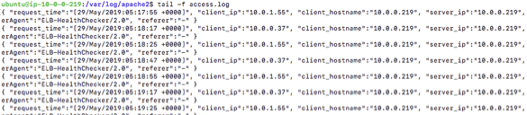

실습7. Log Analysis
Level 7 – Use Kinesis Analytics to perform simple near realtime analysis for your web traffic.
- Kinesis data stream
- Kinesis Analytics
Log Analysis
-
In this level, we will look into how we can perform real-time log analysis for your web application. This is achieve using the Kinesis data stream and Kinesis Analytics application.
-
First of all, we need to create two Kinesis data streams (using the Kinesis web console) in the us-east-1 region: web-access-log (1 shard is sufficient for our demo).
-
SSH into your EC2 instance, configure your Apache to log in JSON format. This will make it easier for Kinesis Analytics to work with your logs. Edit /etc/apache2/apache2.conf, find the area with LogFormat, and add the following new log format to it. For more information on custom log format for Apache, please refer to Apache Module mod_log_config.
LogFormat "{ \"request_time\":\"%t\", \"client_ip\":\"%a\", \"client_hostname\":\"%V\", \"server_ip\":\"%A\", \"request\":\"%U\", \"http_method\":\"%m\", \"status\":\"%>s\", \"size\":\"%B\", \"userAgent\":\"%{User-agent}i\", \"referer\":\"%{Referer}i\" }" kinesis -
Then edit /etc/apache2/sites-available/000-default.conf, change the CustomLog line to use your own log format:
CustomLog ${APACHE_LOG_DIR}/access.log kinesis -
Restart Apache to allow the new configuration to take effect:
$ sudo service apache2 restart -
Check Apache Accesslog to see if the Logformat applied:
$ tail –f /var/log/apache2/access.log
Install Kinesis agent
-
Then, install and configure the Kinesis Agent
$ cd ~ $ sudo apt-get install openjdk-8-jdk $ git clone https://github.com/awslabs/amazon-kinesis-agent $ cd amazon-kinesis-agent $ sudo ./setup --install -
After the agent is installed, the configuration file can be found in /etc/aws-kinesis/agent.json. Edit the configuration file to send your Apache access log to the web-access-log stream. (Let’s not worry about the error log in this tutorial.)
{ "cloudwatch.emitMetrics": true, "kinesis.endpoint": "kinesis.ap-northeast-2.amazonaws.com", "firehose.endpoint": "", "flows": [ { "filePattern": "/var/log/apache2/access.log", "kinesisStream": "web-access-log", "partitionKeyOption": "RANDOM" } ] } -
Once you updated the configuration file, you can start the Kinesis Agent using the following command:
$ sudo service aws-kinesis-agent stop$ sudo service aws-kinesis-agent start -
Then you can check the status of the Kinesis Agent using the following command:
$ sudo service aws-kinesis-agent status -
If the agent is not working as expected, look into the logs (under /var/log/aws-kinesis-agent) to understand what is going on. (If there is no log, what would you do?) It is likely that the user running the Kinesis Agent (aws-kinesis-agent-user) does not have access to the Apache logs (/var/log/apache2/).
-
To resolve this issue, you can add the aws-kinesis-agent-user to the adm group.
$ sudo usermod -a -G adm aws-kinesis-agent-user $ sudo service aws-kinesis-agent stop $ sudo service aws-kinesis-agent start -
Refresh your web application in the browser, then watch the Kinesis Agent logs to see whether your logs are pushed to the Kinesis streams. When the Kinesis Agent says the logs are successfully sent to destinations, check the “Monitoring” tab in the Kinesis data streams console to confirm this.
-
Create a new AMI from the above-mentioned EC2 instance, then create a new launch configuration from the new AMI. Modify your Auto Scaling group to use the new launch configuration. This way, all of the EC2 instance in your web server fleet is capable of sending logs to your Kinesis stream.
-
Now go to the Kinesis Analytics console to create a Kinesis Analytics Application, with the web-access-log data stream as the source. Click on the “Discover scheme” to automatically discover the scheme in the data, then save the scheme and continue. In the SQL Editor, copy and paste the following sample SQL statements. Then click on the “Save and run SQL” button to start your application.
-- Create a destination stream CREATE OR REPLACE STREAM "DESTINATION_SQL_STREAM" (client_ip VARCHAR(16), request_count INTEGER); -- Create a pump which continuously selects from a source stream (SOURCE_SQL_STREAM_001) CREATE OR REPLACE PUMP "STREAM_PUMP" AS INSERT INTO "DESTINATION_SQL_STREAM" -- Aggregation functions COUNT|AVG|MAX|MIN|SUM|STDDEV_POP|STDDEV_SAMP|VAR_POP|VAR_SAMP SELECT STREAM "client_ip", COUNT(*) AS request_count FROM "SOURCE_SQL_STREAM_001" -- Uses a 10-second tumbling time window GROUP BY "client_ip", FLOOR(("SOURCE_SQL_STREAM_001".ROWTIME - TIMESTAMP '1970-01-01 00:00:00') SECOND / 10 TO SECOND); -
From multiple EC2 instances, use the Apache Benchmark tool (ab) to generate some more web traffic. Observe and explain the query results in the Kinesis Analytics console.
$ ab -n 100000 -c 2 http://<dns-endpoint-of-your-load-balancer>/web-demo/index.php
Secreenshot on Kinesis Analytics